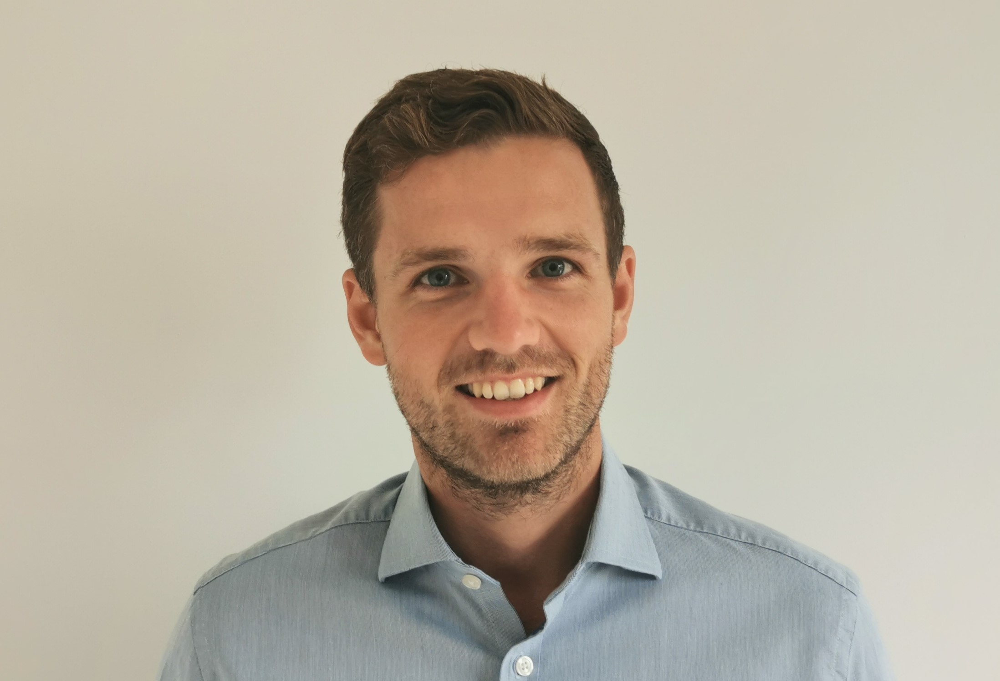

About Me

I am an Associate Professor of Accounting at HEC Lausanne, University of Lausanne. I joined the faculty in 2020 as Assistant Professor and was promoted to Associate Professor in August 2025.
I received my Ph.D. in Accounting from the University of Mannheim in 2020. During my doctoral studies, I was a visiting researcher at Lancaster University Management School.
Research
My research examines how accounting information and disclosures shape firm behavior and transparency. I study these questions in several contexts: corporate reporting choices and their effects on transparency, particularly in banking; institutional investors' disclosures and their influence on corporate governance; and, more recently, how performance management tools can improve human-AI collaboration in financial decision-making.
Current Projects
-
Comparing Human-Only, AI-Assisted, and AI-Led Teams on Assessing Research Reproducibility in Quantitative Social Science
2nd Round at PNAS -
Leading by Example: Can One Large Shareholder's Voting Pre-Disclosure Influence Voting Outcomes?
-
How Regulatory Shocks Travel Through Supply Chains: Capital Market and Real Effects of the European Union's Deforestation Regulation
Grants
-
The Role of Shareholder Voting and Disclosures in Corporate Governance
Swiss National Science Foundation | 348,191 CHF -
Successful Design Choices for Human-Artificial Intelligence Collaborations in Accounting
Swiss National Science Foundation | 594,767 CHF -
The Impact of Western Sustainability Regulations on the Global South
Swiss National Science Foundation | 318,430 CHF
Publications
Journal Articles
-
Accounting Enforcement and Bank Transparency under Hierarchical Supervision in a Banking Union
The Accounting Review, 2025 -
Gender, Knowledge, and Trust in Artificial Intelligence: A Classroom-Based Randomized Experiment
Scientific Reports, 2025 -
Manager Characteristics and the Informativeness of Banks' Loan Loss Provisioning
Review of Accounting Studies, 2025 -
Investor Alignment in Divestment Decisions and Firm Behavior: Evidence from Publicly Disclosed Exclusion Lists
European Accounting Review, 2025 -
Nonstandard Errors
The Journal of Finance, 2024, Vol. 79, No. 3, 1715-2393 -
How Do Non-Performing Loans Evolve Along the Economic Cycle? The Role of Macroeconomic Conditions and Legal Efficiency
European Accounting Review, 2022, Vol. 31, No. 5, 1149-1174
Contact
Anthropole 3023
CH-1015 Lausanne-Dorigny
Switzerland